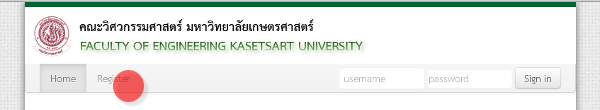

เพื่อรวบรวมข้อมูลของนิสิตสำหรับการติดต่อผู้ปกครองในกรณีฉุกเฉิน และการเผยแพร่ข้อมูลต่าง ๆ ฝ่ายกิจการนิสิตขอให้นิสิตใหม่ลงทะเบียนและป้อนข้อมูลในระบบฐานข้อมูลนิสิต คณะวิศวกรรมศาสตร์ด้วย

ในการลงทะเบียนในเว็บดังกล่าว ให้กดที่ลิงก์ Register ที่หน้าเว็บ เมื่อลงทะเบียนและป้อนข้อมูลเสร็จแล้ว ระบบจะส่งอีเมล์แจ้งบัญชีผู้ใช้ชั่วคราวถ้านิสิตต้องการแก้ไขข้อมูล